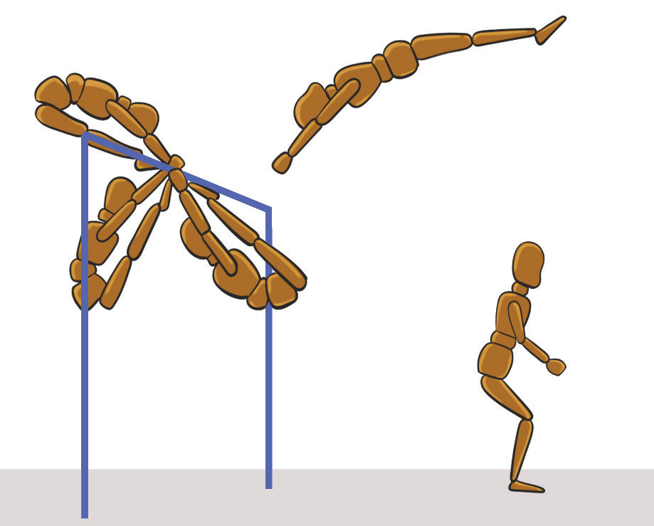

Dismount at the rear end of the swing
A dismount at the rear end of the swing refers to a technique where a gymnast performs their dismount while at the farthest point of the swing typically just before their body starts to swing back toward the bar. This is a common dismount technique for the uneven bars. The following steps will help you practice the dismount at the rear end of the swing:
- (i)Begin by swinging your body back and forth with controlled momentum;
- (ii)Extend your legs and engage your core as you approach the rear end to prepare for the dismount;
- (iii)Ensure you reach the maximum height of the swing when you are at the rear end, with your hips above the bar;
- (iv)Extended your legs, and slightly arche your body, ready for the release;
- (v)Push off the bar at the rear end of the swing, with your arms while tucking your knees or keeping them extended depending on the type of dismount you are doing;
- (vi)Release the bar at the peak of the swing, initiating your rotation (backflip, twist, etc.) while keeping your body tight and controlled, Figure 4.27; and
- (vii)Spot the landing early as you finish the rotation and focus on landing with both feet at the same time with knees bent.

abc